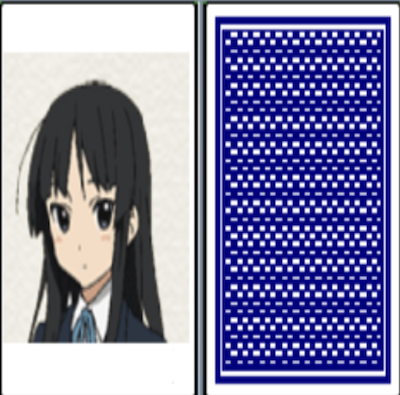
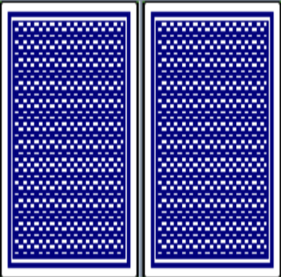

Implemented Functions
|  |
A function to Show Pictures You can click on the card to see the picture. |
|  |
A function to Cover Pictures Pictures of two cards are hidden again if the pictures shown are different. |

|
A function to Decide the End of a Game When all of the same pictures are found, a window stating 'Thank you!' will pop up and tell you the number of clicks. |
Things to Contribute to Society
I created and released creative games, so you can experience a different kind of fun while playing the game.
I created and released creative games, so you can experience a different kind of fun while playing the game.
Background and Purpose
In order to provide services to people by making creative games, I decided to create my own game to prepare myself for becoming a game developer.
In order to provide services to people by making creative games, I decided to create my own game to prepare myself for becoming a game developer.
What I Learned
- I learned how to use asynchronous methods with threads in Java and the structure of multi-threading.
- I learned how to implement computer programs with Java Swing.
Process
- The professor provided a program for cutting images with multiple buttons during the ‘Object-Oriented Programming’ class in the 2nd semester of the sophomore year. After mixing the button layout, click the button to show the picture.
- When two buttons are clicked, I had the picture left as it is if the picture is the same. And, I had the picture hidden again after 0.5 seconds if the picture is different. In this case, I used the sleep function provided by Java Thread.
- The number of clicks is counted each time the button is clicked. I implemented this function using the method of adding 1 to a variable.
- I had a window stating 'Good job!' and the number of clicks displayed when all the same pictures are found.
- Finally, I implemented the game start screen.
- In this way, I was able to implement the program I wanted.
A thing to have Done my Best to Strengthen my Abilities
Analysing existing programs implemented with Java Swing and re-implementing with creative games
Analysing existing programs implemented with Java Swing and re-implementing with creative games
Overall Structure

Used Skills
Java
Java
Development Environment
Eclipse IDE
Eclipse IDE
Further Explanations